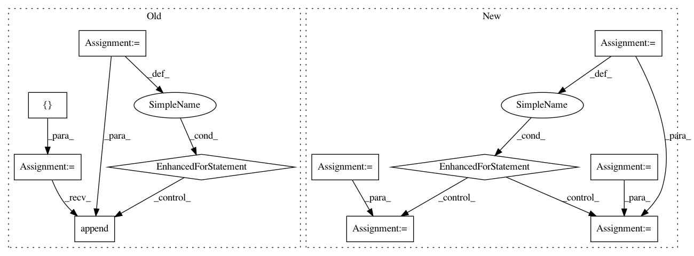

5eef44e87fcb84e6848d2184241ba443dece3e17,skimage/measure/_moments.py,,moments_coords_central,#Any#Any#Any#,51
Before Change
// produces a matrix of shape (N, D, order + 1)
calc = calc[..., np.newaxis] ** np.arange(order + 1)
M = []
for point in calc:
to_add = np.array(1)
for axis in point:
to_add = to_add[..., np.newaxis] * axis
M.append(to_add)
calc = np.sum(M, axis=0)
return calc
After Change
// produces a matrix of shape (N, D, order + 1)
coords = coords[..., np.newaxis] ** np.arange(order + 1)
calc = 1
for axis in range(ndim):
// isolate each point"s axis
isolated_axis = coords[:, axis::ndim].squeeze()
// adjust shape for proper broadcasting later on
for _ in itertools.repeat(None, axis):
isolated_axis = np.expand_dims(isolated_axis, axis=1)
for _ in itertools.repeat(None, ndim - (axis + 1)):
isolated_axis = np.expand_dims(isolated_axis, axis=-1)
// calculate the moments for each point, one axis at a time
calc = calc * isolated_axis
// sum all individual point moments to get our final answer
calc = calc.sum(axis=0)
return calc
In pattern: SUPERPATTERN
Frequency: 3
Non-data size: 11
Instances
Project Name: scikit-image/scikit-image
Commit Name: 5eef44e87fcb84e6848d2184241ba443dece3e17
Time: 2017-12-05
Author: contact@kne42.me
File Name: skimage/measure/_moments.py
Class Name:
Method Name: moments_coords_central
Project Name: explosion/thinc
Commit Name: afc71e321e8e849d27e9d3b2f053c9ead11fd171
Time: 2017-02-04
Author: honnibal@gmail.com
File Name: thinc/neural/vecs2vec.py
Class Name: MeanPooling
Method Name: predict
Project Name: tyarkoni/pliers
Commit Name: 4d8446e7469a7950fcab5ef7f2ce5cf2573674ca
Time: 2020-04-02
Author: rbrrcc@gmail.com
File Name: pliers/tests/extractors/test_extractors.py
Class Name:
Method Name: test_merge_extractor_results